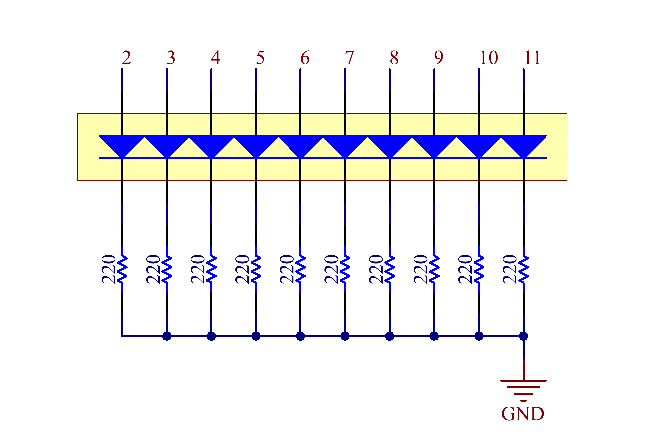

2.4 LED Bar Graph¶
Overview¶
In this lesson, you will learn something about LED Bar Graph. Generally, LED Bar Graph works as a battery level indicator, Audio equipment, industrial control panel. If we want, we can also find its other application.
Components Required¶

Component Introduction¶
LED Bar Graph is an LED array, which is used to connect with electronic circuit or microcontroller. It’s easy to connect LED bar graph with the circuit like as connecting 10 individual LEDs with 10 output pins.
Note
The anode is the side with a label (1-10).

Fritzing Circuit¶
In this example, we use digital pins 2~11 to drive the LED Bar Graph. LED Bar Graph has ten separate LEDs inside and each LED has two pins. The left pins 1~10 of LED Bar Graph are connected with the digital pins 2~11 respectively; the right side pins 11~20 are separately extended to same side of these 220ohm resistors whose other sides are identically connected to GND.

Schematic Diagram¶
Code¶
Uploaded the codes to the Mega2560 board, you can see that the LEDs on the LED Bar Graph flash in sequence.
Code Analysis¶
The codes in setup() use the for loop to initialize pins 2~11 to output mode in turn.
for(int i=2;i<=11;i++)
{
pinMode(i,OUTPUT);
}
The for loop is used in loop() to make the LED flash(turn on 0.5s, then turn off 0.5s) in sequence.
for(int i=2;i<=11;i++)
{
digitalWrite(i,HIGH);
delay(500);
digitalWrite(i,LOW);
delay(500);
}
Refer to Part 1-1.2 Digital Write for more details about controlling the LED by using digital pins.
Phenomenon Picture¶